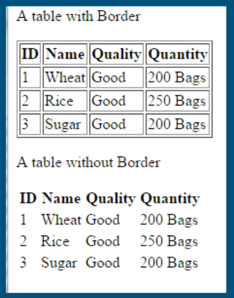
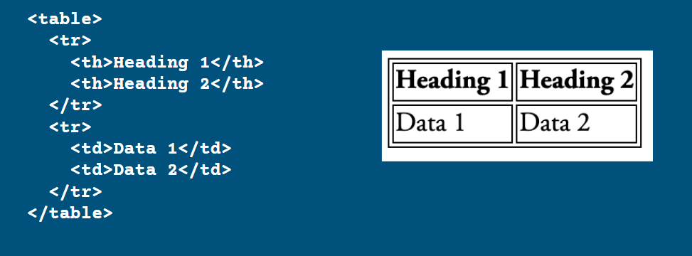
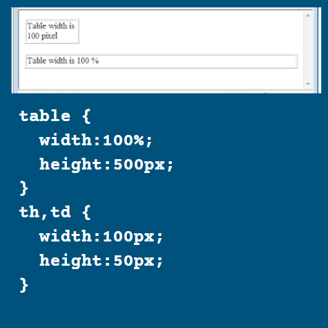
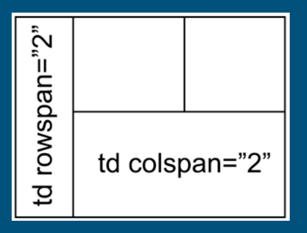

Lesson 5: Tables
Tables
Tables allow web developers to arrange data into a grid-like structure.
Aside from tables with grid borders, you can also create tables without borders and position content without it looking like a grid.
The essential elements for tables are:
- table: creates the table
- tr: creates a row
- th: creates a heading cell
- td: creates a data cell
Example:

HTML Structure of a Table

Table Borders
In HTML5, we use CSS to create borders. If you want a table with borders, add the following code to the CSS section of your webpage on Codepen:
table, th, td {
border: 1px solid black;
}
Table and Cell Sizes
By default, a table will size itself to fit the contents of the cells within it. However, you can force a table (or the cells within it) to have specific sizes. You can specify the sizes in pixels (px) or as a percentage of the width/height of the page.
If you want to control the size, write the following into the style section of your page in Codepen:

Colspan and Rowspan
Sometimes you want a cell to span more than one row or column (or both). In this case, you use the rowspan or colspan attributes.
<th colspan="2">
<td rowspan="2">
Example:
